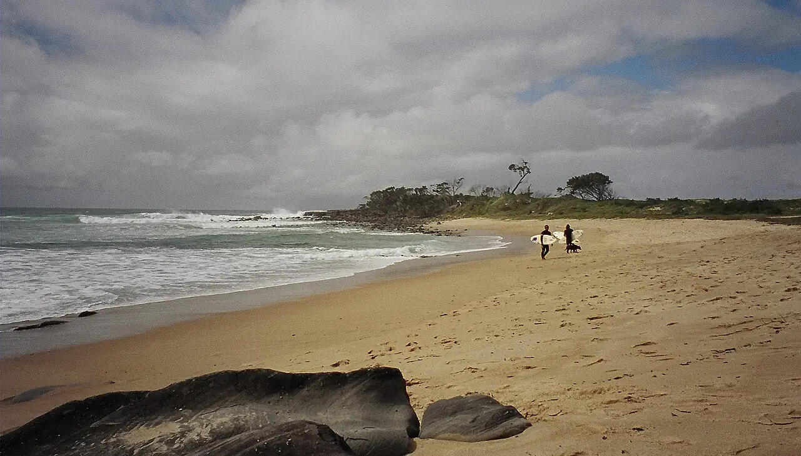

Angourie Point
Nouvelle-Galles du Sud, Australie · surf

Droite puissante qui casse sur un fond de rochers au bout de la pointe d’Angourie, au sud de Yamba. Le spot fait partie des réserves nationales de surf d’Australie.
- Lieu
- Nouvelle-Galles du Sud, Australie
- Niveau
- Expert
- Activités
- surf
- Type d'eau
- Mer / océan
- Coordonnées
- -29.48, 153.37 (position approximative du secteur)
Dangers à connaître
- Fond de rochers et entrée à l’eau sur rochers glissants.
- Vague puissante et line-up exigeant, réservé aux surfeurs confirmés.
Le conseil d'Ocean Buddy
Observe longtemps depuis la pointe : l’entrée et la sortie de l’eau entre les rochers sont la partie délicate.
Ouvrir dans Ocean Buddy Télécharger sur l'App Store
Source : Fiche Ocean Buddy · septembre 2026 · à vérifier localement.